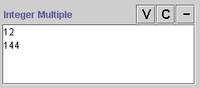
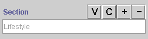

Some fields have field buttons, 


 , located at the top right of the
field. These buttons allow you to view and edit, create, add, or delete a value
for the field. The buttons available depend on the type of field.
, located at the top right of the
field. These buttons allow you to view and edit, create, add, or delete a value
for the field. The buttons available depend on the type of field.


The following field types have buttons:
The buttons have the following actions:
| Button Name | Fields Where it Appears | Action | |
| |
V(iew) button | All multiple fields
Class fields and Instance fields |
Click this button to open a dialog box or form that
allows you to edit the highlighted value.
For Instance fields, any edits you make will take effect everywhere the instance occurs. For single Class and Instance fields, the value does not need to be highlighted. |
| C(reate) button | Multiple Float, Multiple Integer, and Multiple String
fields
All Instance fields |
For Float, Integer, and String fields, click this button to open
a form where you can enter a new value.
For Instance fields, click this button to create a new instance. See Creating an Instance From a Field. |
|
| Add button | All multiple fields
Class and Instance fields |
Click this button to add a value. For multiple fields, this adds an additional value to the list; note that you cannot add the same value twice. For single Class fields and Instance fields, this lets you choose from a list of pre-existing values. | |
| Remove button | All multiple fields
Class and Instance fields |
Click this button to remove a value. For multiple fields, this removes the highlighted value from the field. For single Class fields and Instance fields, this clears the field, but does not remove the selected class or instance from the knowledge base. |
For multiple fields, the View and Delete buttons are grayed out when none of the values are highlighted.
Next: The Standard Fields